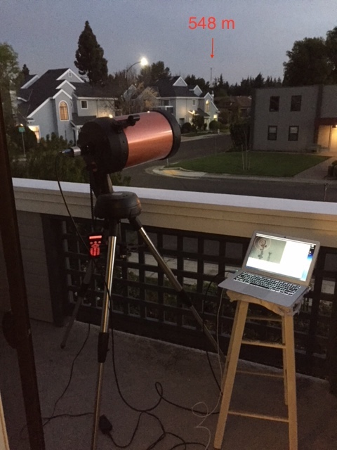
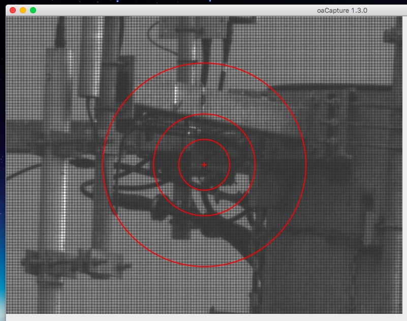
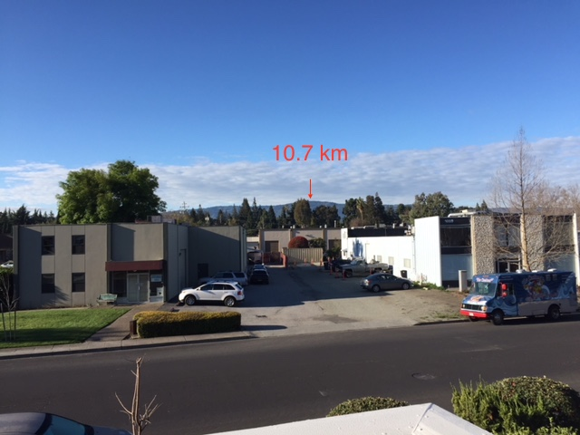
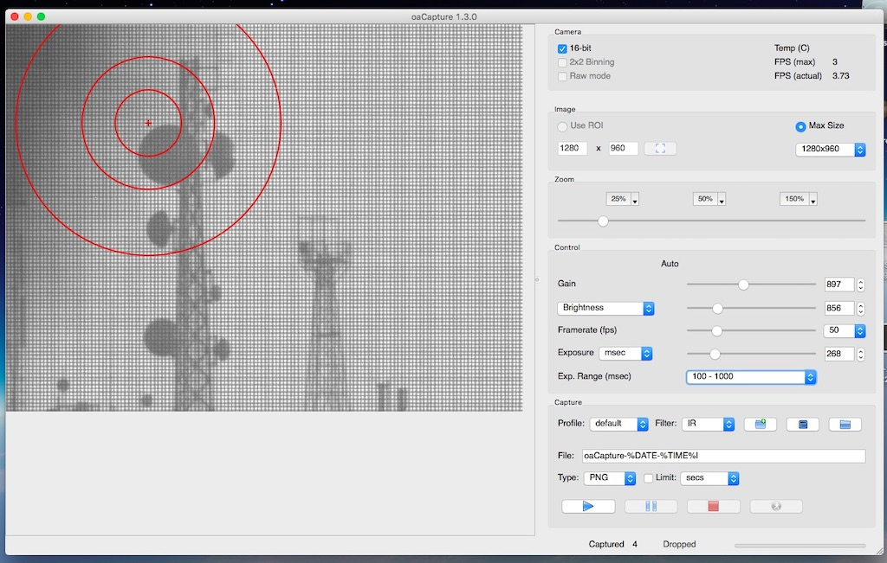
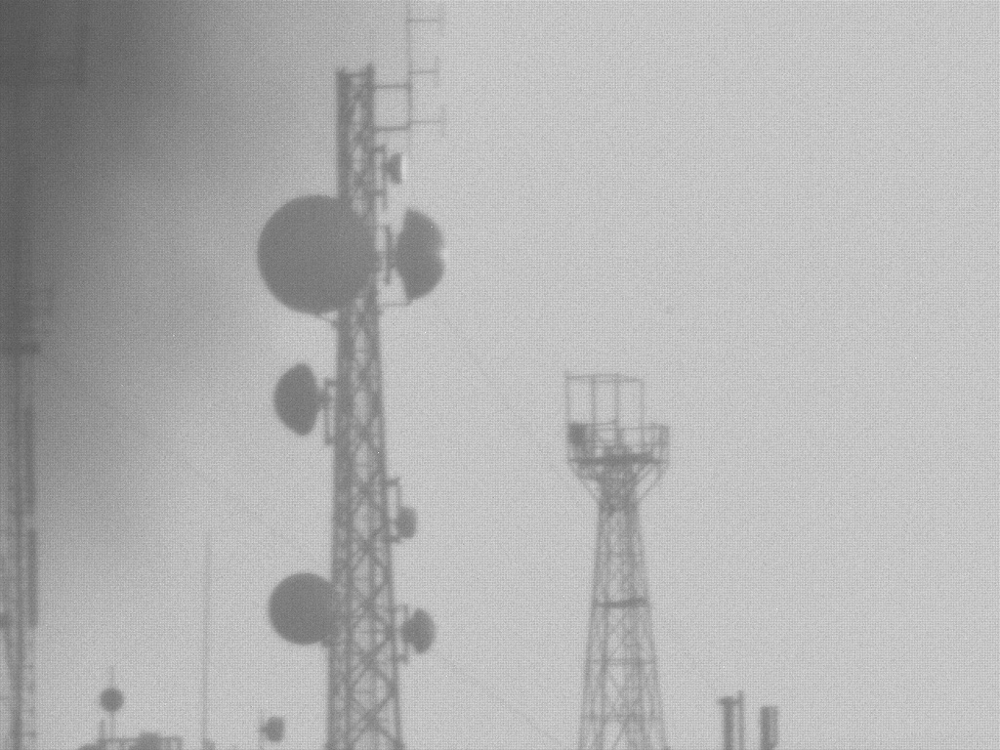

404 MLC Observatory |
|
This is my home observatory with a Celestron 8se telescope (Aperture 200 mm, Focal length 2032 mm) and a Skyris 132C camera. I use oaCapture on a MacBook Pro to get the images.  |
|
This is the close up of the Mountain View police station's antenna at 548 meters.  |
|
This is the Black Mountain Top Radio Tower at 10 km away.  |
|   |